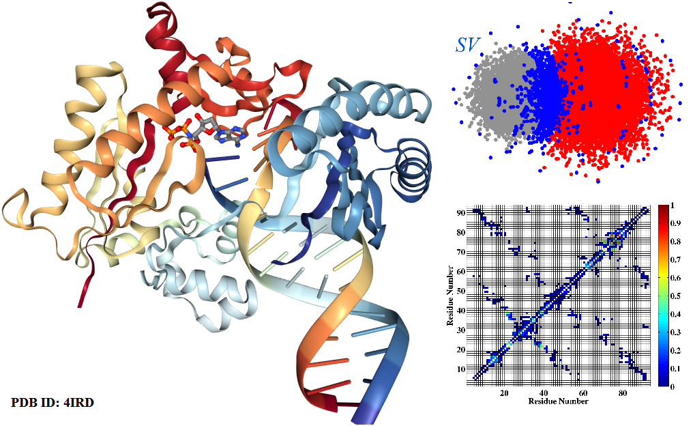
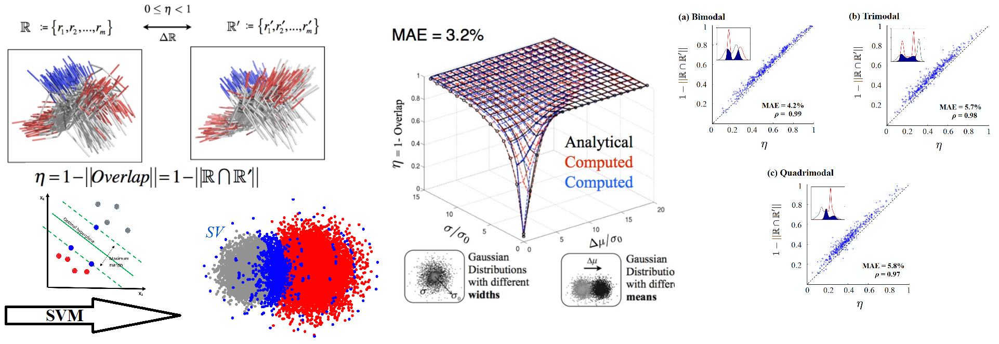
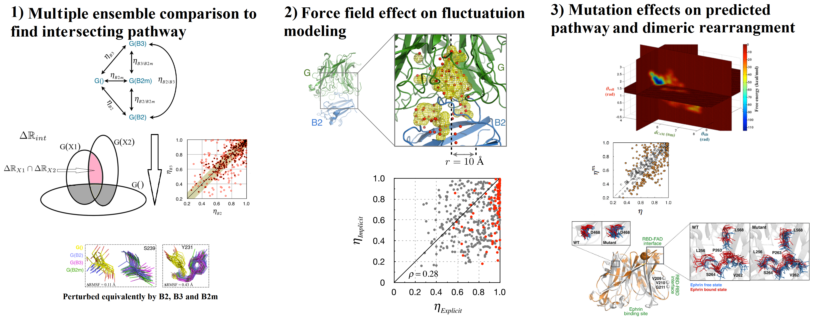
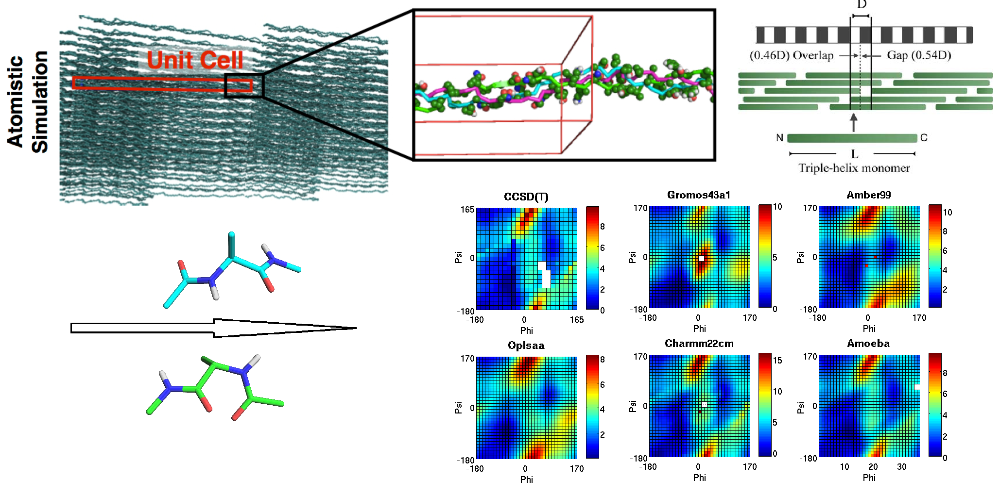
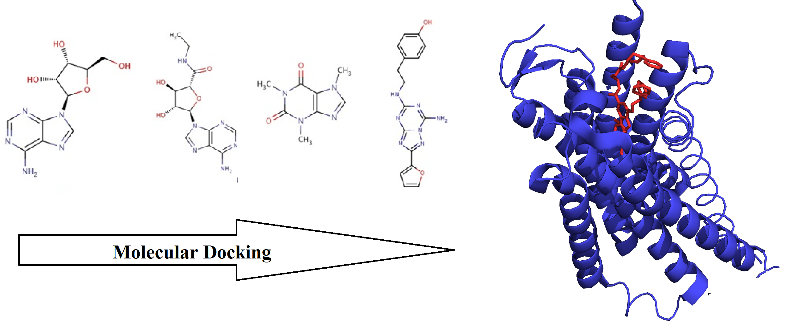
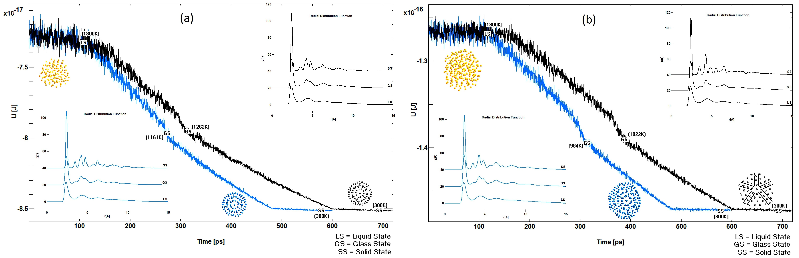
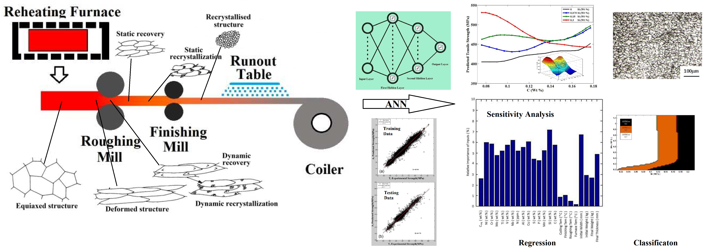

Mohsen BotlaniPh.D.[Resume]Cell Biology, Microbiology and Molecular Biology Computational Biophysics Lab University of South Florida 4202 East Fowler Avenue Tampa, FL, 33620 Email: mohsenb [at] mail.usf.edu Email: m.botlani [at] gmail.com |
 |
|---|
About Me
I obtained my Ph.D. from the Department of Cell Biology, Microbiology and Molecular Biology, University of South Florida under supervision of Dr. Sameer Varma. My PhD research lied at the intersection of machine learning and computational biology. Broadly, I applied advanced machine learning methods to model protein regulations. I received my undergraduate degree in Material Sicnece and Engineering from Isfahan University of Technology.
Research Interests
- Computational Biology, Bioinformatics, System Biology, Omics Data Analysis, Pharmacogenomics, Computational Oncology, Health informatics
- Machine Learning: Artificial Neural Networks/Deep Learning, Kernel methods
- Big Data Analytics, Statistical Modeling
- Probabilistic Modelling, Bayesian Statistics
- Network Analysis/Graph Theory
- Evolutionary Game Theory, Algorithmic Game Theory
Work and Research Experiences
|
Bioinformatics Staff Scientist at M2Gen | |
|
Data Scientist at WellCare Customer retention predictive model development by usuing machine learning methods. Development of all-cause mortality rate predictive models of members based on their age,
gender and common laboratory tests by machine learning methods. | |
|
Research Assistant at Moffitt Cancer Center under supervission of Dr. George Blanck. Pipeline development for identification of systemic mutations (in whole exome sequence (TCGA)) associated with cancer Secretome analysis to characterize chronic acidosis of tumor microenvironment Proteomics analysis of well differentiated and dedifferentiated liposarcoma | |
|
Graduate Research Assistant at
Computational Biophysics Lab, University of South Florida Modeling of Dynamic Allostery in Proteins Enabled by Machine Learning Allostery regulation or change of the protein function in a physically distant site from binding site, occurs in many proteins with minor structural difference. There is no method that can fully characterizes this signal transduction phenomenon. By using machine learning methods and graph theory we developed a method that can characterize this mechanism in PDZ2.  Reference: |
|
|
Motif co-occurance analysis of Proteomes of S. aureus, B. subtilis and E. coli To see if the protein prenylation (addition of prenyl groups to peptide chains), putatively occurs in prokaryotes we perform a bioinformatic analysis. We searched the S. aureus B. subtilis and E. coli proteomes for translated peptides containing the characteristic eukaryotic 'CAAX' motif at their C-terminus. Just few proteins found that contained the prototypical CAAX-motif in Which suggests in prokaryotes either proteins are not prenylated in bacterial organisms or that such modifications occur at entirely different protein recognition sequences. (C=cysteine, A=any aliphatic amino acid, X=any amino acid) The possibilities for the aliphatic amino acids (A) are: G, A, V, L, I, P, or M. Reference: Quantification of Ensemble Changes by a Direct Comparison Direct comparison of conformational ensembles using inverse machine learning to quantify the changes in fluctuations as well as structural changes. This quantification is vital for characterization of regulatory mechanism of proteins with small structural changes due to activation. Many protein families are showing this behavior such as GPCRs, PDZ domains and T-cell receptors. The method uses support vector machine(SVM) mathematical framework for this quantification and showed accuracy in reproducing overlap estimated for a variety of distributions. Applications of Direct Comparison These applications are all pertaining to characterization of fusion mechanism of Nipah virus. This mechanism starts by attachment of NiV-G protein to the host cell and its binding signal transduction to its fusion protein (NiV-F). In the first study by cross-comparison of 3 different ensembles which showed similar function in signal transduction we found a subset of residues that were undergo similar perturbation. We speculate that this intersecting pathway contains signaling pathway as it showed good agreement with experimental data [1]. In the second study we should the effect of force field (implicit vs. explicit water molecules) on estimating changes in perturbation due to binding. The results showed this effect is more pronounced for intersecting pathway [2]. Third study characterizes the effect of mutation on potential signaling pathway and dimeric configuration rearrangement [3]. (ISCB) 2016 meeting's 3rd best poster depicts most of these studies[4]. References: |
|
|
Force Field Effects on Simulated D-band Length of Type I Collagen Collagen is the primary constituent of the extracellular matrix of animal connective tissue. Type I is the predominant collagen in mature tendons and ligaments, where it gives them their load-bearing mechanical properties. However, to date, no atomistic simulations of this diffraction model under zero-stress conditions have reported to successfully reproduce the D-band length (captured by TEM). In this study we evaluate systemically the effect of several factors on D-band shrinkage. Based on the results the force field plays a major role in this shrinkage. Generally, force fields whose their backbone dihedral energy landscape matches more closely with our computed CCSD(T) values produces a small D-band shrinkage. Reference: |
|
|
Research Assistant at
Bioinformatics Research Center, Isfahan University of Medical Sciences GPCR (adenosine receptors) molecular docking About 50% of all modern medicines act on G protein-coupled receptors (GPCRs). This study by using molecular docking and subsequent analysis characterizes the receptor-ligand interactions of several complexes of A2A adenosine receptors with following PDB IDs: 2YDO, 2YDV, 3EML and 3RFM that bounded to Adenosine, NECA, ZM241385 and Caffeine respectively. |
|
|
Scientist at Isfahan University of Technology A Molecular-Dynamics Study of Freezing Behavior and Structures of Cobalt Nanoclusters By molecular dynamics with general embedded atom method the structures and energies are calculated for cobalt nanoclusters with the diameter of 1.5 - 3 nm (147 - 1215 atoms) at two different cooling rates. Also to determine the glassy state temperature, the results were analyzed by Radial Distribution Function. It was found that the structure of cobalt nanocluster in the specified size changes from icosahedral and decahedral for smaller clusters to FCC for larger clusters with estimated crossover about 2.55 nm (923 atoms). Moreover, the effect of icosahedral magic numbers was observed only for cluster with 147 and 309 atoms. |
|
|
Data Analyst at Mobarakeh Steel Company(MSC) Data Modelling of Hot Mill Steel Products In this study we used annual product of Mobarakeh Steel Company (MSC) the largest steel maker of MENA (Middle East & Northern Africa) region to model, characterize and predict the mechanical properties of the products. Bayesian Regularized Neural Network (BRNN) were used to make a regression model (with 70234 samples) for predicting tensile strength of products [1, 2]. The relative importance of the input variables also were estimated by a sensitivity analysis. A Bayesian Neural Network classifier, with uses Reversible jump Markov Chain Monte Carlo to find right complexity of the model were developed for predicting steel grain size based on input parameters of hot mill(with 624 grain size images)[3].The full study is available in this book chapter[4] (with more than 8100 downloads)  References: |
|
Teaching
- Teaching Assistant:- Biology of Human, Biology I cellular processes and General Genetics